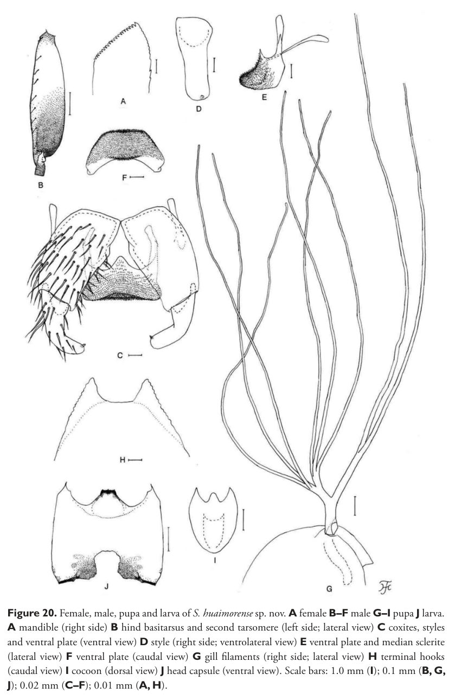

Species › Simulium › Gomphostilbia
Simulium huaimorense
| Classification | Genus Simulium, subgenus Gomphostilbia |
|---|---|
| Status | valid |
| Distribution | Thailand (Chiang Mai and Chiang Rai) (Takaoka et al. 2020) |
| Thailand | Type locality: coffee plantation, Huai Mor, Doi Saket, Chiang Mai Province, 1,154 m, 19°03'36.8"N 99°19'15.7"E, 2-II-2019; also Chiang Rai (Takaoka et al. 2020, pp. 119-123) |
| Diagnostic notes | S. asakoae species-group (COI subgroup IV). Female: mandible with distinct outer teeth, claw tooth 0.43-0.47x claw, sensory vesicle 0.26-0.29x 3rd palp segment, spermatheca 1.3x as long as wide (vs 1.6x in S. nanthaburiense). Male: upper-eye facets in 16 vertical columns and 17 horizontal rows (vs 14-15 x 15-16 in S. myanmarense), hind basitarsus 3.6-4.0x width (vs 4.3-4.4x in S. myanmarense), subcosta bare or with 2 hairs. Pupa: cocoon with short anterodorsal projection, primary stalks of dorsal and middle gill triplets very short (0.1-0.3 and 0.6-0.7x common stalk vs subequal in S. myanmarense). Larva: abdominal segments 1-4 grey, 5-6 unpigmented, 7-8 light grey (Takaoka et al. 2020, pp. 119-123). |
| Sources | Takaoka et al. 2020 |
How it keys out
The chain of characters leading to this taxon in each key (a ready-made diagnosis).
Thailand: Simulium asakoae species-group (females) (Takaoka et al. 2020) – couplet 13a
- 1b Hair tuft of base of radial vein yellow
- 2b Sensory vesicle short to medium-long, less than 0.4 times length of third palpal segment (Fig. 1A)
- 4a Mandible with distinct teeth on outer margin (Fig. 22B)
- 5a Body length 1.9–2.2 mm
- 6b Claw tooth 0.43–0.47 times length of claw
- 11b Sensory vesicle 0.26–0.35 times length of third palpal segment
- 12b Sensory vesicle 0.26–0.29 times length of third palpal segment
- 13a Spermatheca 1.3 times as long as wide
Thailand: Simulium asakoae species-group (males) (Takaoka et al. 2020) – couplet 17a
- 1b Hair tuft of base of radial vein yellow
- 2b Upper-eye (large) facets medium to dark brown
- 4b Antenna brownish except scape, pedicel and base of first flagellomere yellowish
- 5b Hind basitarsus 1.0–1.3 times as wide as hind femur (Fig. 4C)
- 11b Upper-eye (large) facets in 11 or more vertical columns
- 12b Upper-eye (large) facets in 12–17 vertical columns
- 16a Upper-eye (large) facets in 16 or 17 vertical columns
- 17a Subcosta bare or with two hairs; wing length 1.9–2.0 mm
Thailand: Simulium asakoae species-group (pupae) (Takaoka et al. 2020) – couplet 8a
- 1b Cocoon with or without anterodorsal bulge or short anterodorsal projection (up to ca. 1.0 mm long) extended at most up to anteroventral tips of cocoon
- 3b Dorsum of abdominal segments 1 and 2 unpigmented or light yellowish
- 5b Dorsum of abdominal segment 1 without minute tubercles
- 7a Cocoon with short anterodorsal projection (Figs 7G, 20I)
- 8a Primary stalks of dorsal and middle triplets of gill filaments much shorter than their common stalk (Fig. 20G)
Thailand: Simulium asakoae species-group (mature larvae) (Takaoka et al. 2020) – couplet 10a
- 1a Abdominal segments 1–4 unicolorous
- 2b Abdominal segments 1–4 greyish or greenish grey or greenish
- 5b Pharate pupal gill with medium-long common basal stalk
- 6b Postgenal cleft 0.8–1.4 times length of postgenal bridge
- 9b Abdominal color pattern otherwise
- 10a Abdominal segments 7 and 8 light grey but abdominal segments 5 and 6 unpigmented (Fig. 25I)
Figures

